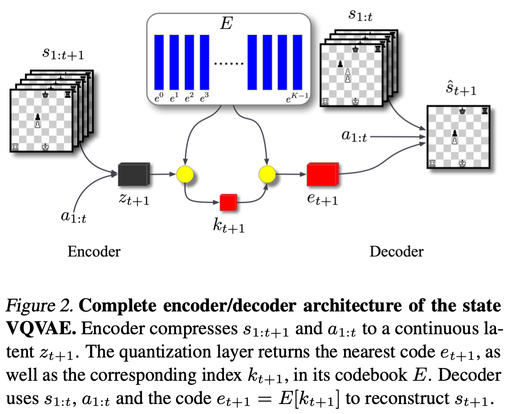
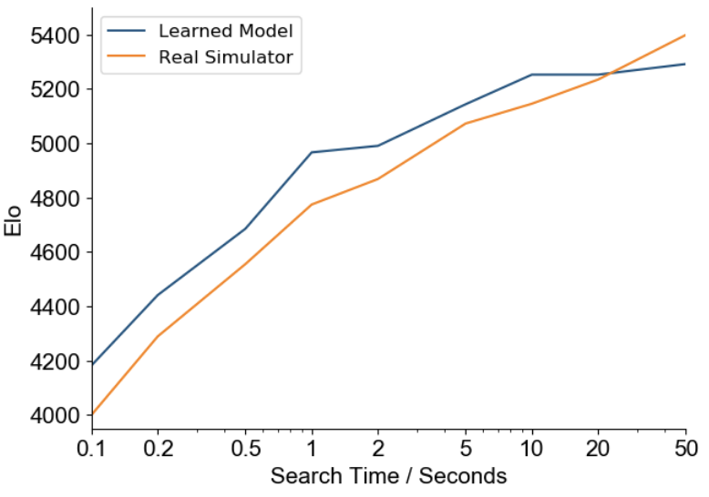
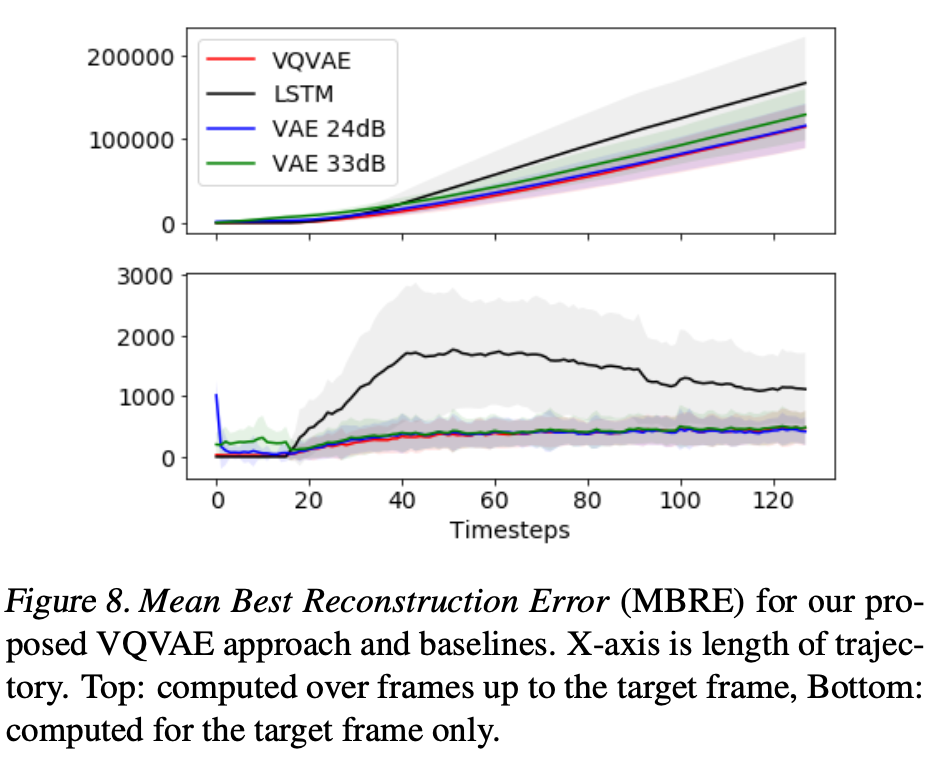
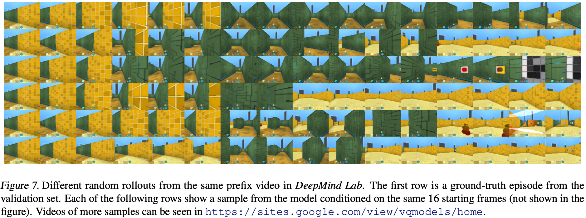

This paper is a bit of a mess to interpret, but its central question is this: Can we extend MuZero-style models to the stochastic setting, while preserving planning performance?
On the one hand, stochastic transitions push you towards continuous representations: your first instinct is to learn a distribution over latent states. Now you can sample the learned distribution to discover possible stochastic continuations of (hidden) state. Unfortunately, it’s not clear how to integrate this kind of scheme with planning algorithms like MCTS, where the search tree will blow up in size from sampling the stochastic state nodes. To remedy this, the authors introduce an interesting conditional discrete VQ-VAE state representation which allows them to preserve planning performance in discrete state-action space, while retaining sufficiently expressive representations of uncertainty over state that capture stochastic dynamics well. Hence, Vector Quantized Models for Planning. This paper is a direct modification of MuZero, so we review it briefly first:
MuZero is a state of the art model-based reinforcement learning algorithm, but in its original form it is limited to deterministic (or at least only weakly stochastic) settings. It consists of a representation function, \(h(s) = s_h\), a value/policy predictor, \(f(s_h) = \pi, v\), and a dynamics function \(g(s^{t-1}_h,a^{t-1}) = s^t_h\). In practice, each of these functions are represented by a resnet. Here’s how they’re linked up:
The key insight of MuZero is to only flow policy and value gradients through the dynamics model \(g\), rather than explicitly decoding \(g\) back to observations and grounding it in some particular semantic representation of state. It is free to represent state in whatever way is relevant to planning, with no other constraint. This is the so-called Value Equivalence principle.
MuZero achieves state-of-the-art performance in a range of deterministic games, such as Go, Chess, and Atari. Because it learns a model of the dynamics at training time, it can unroll its dynamics model at test time using MCTS to look ahead and consider various plans of action, resulting in improved test-time performance as a function of planning depth:

The determinism of the dynamics function in MuZero plays well with planning: given a state and some potential action: there is a unique outcome from the model, so we can build an MCTS search tree in the usual way:

(Note: the state representation learned by the model is most likely history dependent, even though the actual states are Markovian. Could enforcing a consistent representation of state from different planning paths be a useful regularizer?)
Now consider extending MuZero to the stochastic case: say we parameterize the output of the dynamics as, e.g. a Gaussian mixture over latents. We can still learn with gradient tricks like straight-through estimation, but we will need to sample from our mixture distribution to draw particular state outcomes of actions. Each state node in the tree above becomes a distribution from which we could draw infinitely many possible states. How should we sample to get good coverage, but avoid blowing up the tree?
We would prefer some discritization of state that captures broadly the different possible states induced by the stochastic dynamics, but doesn’t give us continuously-many choices, making search hard to integrate with.
This is where VQ-VAEs enter the picture. To test the quality of their stochastic extension, they study single player chess - chess where the model cannot observe opponent actions, only the resultant state. This essentially turns chess into a stochastic environment by subsuming opponent action into the state transition. If the stochastic MuZero can perform well in chess (where planning is necessary) without direct access to the opponent’s actions, then this provides evidence that the learned stochastic environment dyanmics/encodings work well (or so the authors would seem to claim). Stare at the first diagram again for a while:
The authors first train this vector-quantization layer, independently from the rest of the model. At the end of this training phase, the codebook vectors \(\{e^k\}^K_{k=1}\) represent future state information, conditioned on current state. Think carefully about this - the \(e_k\)’s don’t represent exact future states themselves - then we could only learn \(K\) futures - they represent latent semantic information about how state \(s_t\) will evolve. If this doesn’t make sense, I recommend reading the original VQ-VAE paper, and note that the procedure here is not the exact VQ-VAE procedure - it’s instead a conditional VQ-VAE, which uses both the codebook vector along with the previous state to reconstruct the future state.
Now the notation used by the authors becomes inconsistent. The State VQ-VAE diagram shows the quantization layer \(Q\) emitting discrete latents \(k_t\), rather than \(e^k_t\):

and the full MuZero-style model unroll is:

Let’s unpack this. First, the authors have introduced the intermediate (diamond=stochastic?) node \(c_0\) without defining it. It is not defined elsewhere in the paper. It is the result of applying \(g\) with the previous action and hidden state. I’m not sure what to call its output, so lets just say it’s some continuous state \(z\).
The initial state \(s_t\) is passed through the representation function \(h\) to produce \(h_t\). We can produce the initial policy and value predictions by running this through \(f\) to get \(\pi_t,v_t\). So far, there is no action on our part, so there is no stochastic component.
Now we sample an action from \(\pi_t\): \(a_t \sim \pi_t\). We provide the (deterministic) hidden state and potential action to the dynamics: \(g(a_t,h_t) \stackrel{?}{=} z_{t+1}\), and now \(f(z_{t+1}) = \tau_{t+1},\hat{v}_{t+1}\). What is \(\tau\)? It seems to be a policy over the learned discrete latents from the codebook that was trained earlier, \(\{e^k\}\). So \(\tau\) produces a distribution \(\tau = P(k | z_{t+1})\), from which we sample a particular \(k\) like a one-hot encoding to choose a particular \(\{e^k\}\) … I think. This diagram could really use a lot more explicit discussion.
Now \(e^k\) (not the indexing integer \(k\)) is fed into a different dynamics function \(g'(e^k_{t+1},z_{t+1}) = h_{t+1}\), and we start again.
Okay. That’s a whole lot of guesswork from me which is not really supported by the notation used in the diagram, but is the only reasonable thing I can imagine. I think the authors switched notation so that \(k\) went from being an indexing integer to just being \(e^k\), and also forgot to define the \(c_0\) node. There’s a lot of detail missing here, which is made even worse by switching notation at the same time.
Okay, so we train this kind of cool conditional VQ-VAE, get our codebook of semantic conditional futures, and can now plan over our own actions and stochastic environment responses, represented by sampling a policy over the learned discrete latents. Now the MCTS tree has both action edges and discrete latent variable edges:

I think of the discrete latents as encoding different semantic futures: this kind of thing happens, or that kind of thing happens, where many possibilites get collapsed together into this discrete representation, and the policy is the likelihood of each of these kinds of futures being the one the environment actually chooses.
A major component in the effectiveness of MCTS planning is the action-selection heuristic, which maximizes the following upper confidence bound:
\[ \underset{a}{\text{argmax}} \left[Q(s,a) + P(a|s)\times U(s,a)\right] \]
where \(U(s,a)\) keeps track of node visit statistics to encourage exploration, the details of which aren’t important here.
A bad action selection heuristic will make planning useless (e.g. BFS in continuous action space), while a good one will perfectly balance exploration with exploitation, following high-value paths while minimizing blind spots for under-explored regions. In two-player zero-sum games, the value function of each player is exactly the reverse of the other, so if my value in some state is \(v\), yours is \(-v\) (or \(1-v\), depending…). If I want to plan based on what is optimal for you, I know I can just invert my value function in the action-selection heuristic. Now that we are planning over environment responses, it’s not clear what to replace \(Q(s,a)\) in the above for the environment. If we are in a zero-sum two player setting we can let \(Q_{env} = -Q\); in a cooperative setting we can let \(Q_{env} = Q\); but in general, or in a neutral setting, the environment may not have a value function, or its value function may not be related to ours, so we simply set \(Q_{env} = 0\), which reduces the action selection (or rather the discrete latent selection for the environment) to just rely on \(\tau\), the environment policy over latents. In this case, MCTS becomes similar to Expectimax search.
The paper shows that by setting \(Q_{env} = -Q\) in adversarial settings such as single-player chess they recover the planning performance of vanilla MuZero. Prior knowledge about the adversariality of the environment then can be encoded to improve search.
The VQ model matches the vanilla MuZero trained on an offline chess dataset, and generalizes to the single-player setting where vanilla MuZero fails completely.
The VQM is also trained in a 3D first person environment from DeepMind Lab, and it outperforms a few somewhat-naive baselines in reconstructing observations at long time horizons:

Some stochastic rollouts from the VQM compared to ground truth (top row):

Learning an environment policy over sparse, discrete latent codes to generalize MuZero to stochastic, partially obervable environments seems to work as expected, but the tested environments aren’t terribly convincing. An evaluation environment with a combination of both more visual complexity and strategic planning would have been welcome. The use of conditional VQ-VAEs to produce discrete latents over future observations for planning is a neat idea, but it would be nice if the state rep model did not need to be trained separately before the modeling phase.